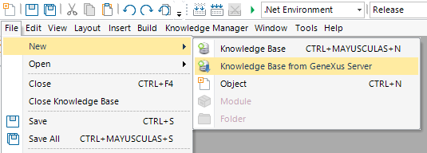

The Knowledge Base from GeneXus Server option is the first operation you have to complete in order to subscribe to a Knowledge Base hosted in a GeneXus Server instance.
It's located under the File > New menu in the GeneXus IDE.

1) Select the Knowledge Base from GeneXus Server option from the File>New menu. The following prompt will be shown:
2) If you know the Knowledge Base URL then you just have to write it in Server KB URL and continue with the following step. Otherwise, click Select Server KB to select the Server's Knowledge Base from a list of available GeneXus Servers
After clicking the Select Server KB option, a new window will be prompted to select the GeneXus Server Instance from the Servers list. Open and Sandbox instances are listed by default:
The wanted Server must be chosen. If the GeneXus Server instance isn’t listed, to add it to the list the Add New Server option must be selected:
Write all the required information:
Click Check Connection to test the Server's connection (using the selected username and password) and click OK to add the GeneXus Server instance to the Servers list.
Note: The username and password can be remembered using the Save Password CheckBox. If the Save Password checkbox isn't enabled, the next time you want to connect to the GeneXus Server an authentication dialog will be displayed:
3) Once you are connected to a GeneXus Server Instance, a list of Knowledge Bases served by this GeneXus Server is displayed in Knowledge Bases:
Select one Knowledge Base from the list, by double-clicking on it or by clicking and then pressing Ok.
Note: Filter Knowledge Bases using the search box located above the list, for easy and fast Knowledge Base searching. This is especially useful to create a Knowledge Base from a GeneXus Server Instance populated with several Knowledge Bases.
4) After a Knowledge Base has been selected, the Version(s) must be chosen. You can choose to import only the Trunk version, to import All versions, or to import a custom set of Selected versions.
Select all the Development Versions and/or Frozen Versions from that Knowledge Base.
Note: To choose a custom set of Versions select Selected Versions on the radio button and then click the "..." button. A dialog will be displayed:
Check all the versions to import (if more than one Version is selected a Minimum Spanning Tree will be automatically selected). Notice that filters can be applied by using the search box located above the list.
5) Once the Versions are selected set Name and Path of the Knowledge Base and click the Create button.
Note: Use Advanced Setting to configure Knowledge Base storage properties.
Next, a progress bar will be displayed showing the three steps involved in the creation of a KB:
Once all steps have been completed, the Knowledge Base created will be an exact copy of the Knowledge Base hosted in the GeneXus Server. After this process, the connection to GeneXus Server is dropped and you are ready to work off-line.
Note that the Team Development node located under the Preferences has been updated.
Send Knowledge Base to GeneXus Server
| Backlinks | |
| Commit to GeneXus Server | Defining versions for each application release |
| Toc:GeneXus - Table of contents | |
| Send Knowledge Base to GeneXus Server | |
| Category:Team Development with GeneXus Server |